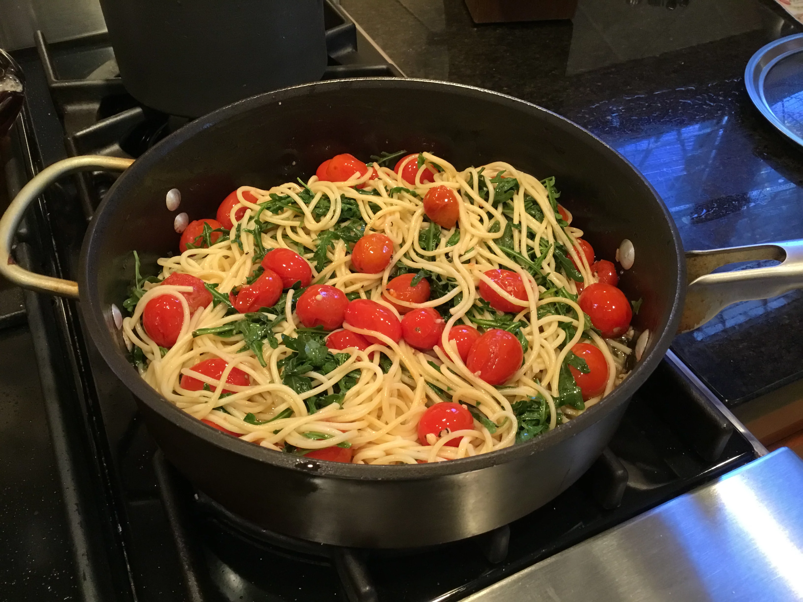

Pasta with Arugula and Tomatoes

Description:
This is a super-simple, quick pasta recipe that tastes best with cherry tomatoes or other sun-ripened tomatoes. It is perfect during the summer months when tomatoes are in season.
Ingredients:
- 10 OZ spaghetti
- 4 TBSP olive oil
- 2 cloves garlic, minced
- 1 pint cherry tomatoes, halved
- salt and freshly ground black pepper to taste
- 1 (5 OZ) package arugula, torn
- 2 TBSP shaved Parmesan cheese, or more to taste
Steps:
- Bring a large pot of lightly salted water to a boil. Cook spaghetti in the boiling water, stirring occasionally, until tender yet firm to the bite, about 12 minutes. Drain.
- Meanwhile, heat olive oil in a skillet over medium-low heat and cook garlic until translucent and fragrant, about 2 minutes. Add cherry tomatoes. Increase heat, cook, and stir until lightly browned, 5 to 7 minutes. Season with salt and pepper.
- Remove skillet from heat and mix in arugula. Mix in cooked spaghetti and drizzle with olive oil. Serve immediately with Parmesan cheese.
Recipe Index Page